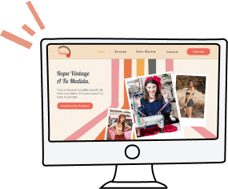
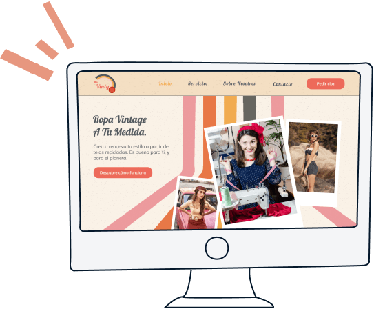

Miss Vinty


Miss Vinty
- Branding
- Website Design
- Website Development
- Wordpress
We crafted a beautiful website for a second hand clothing store that also proposes tailoring services from old tissues or used items.
Miss Vinty is a workshop located in Spain managed by two young entrepreneurs that want to make thrifted clothes affordable for everyone. For that, they propose their clients to bring old or unused clothes that they would adapt to their current size or style for minimum price.
We built their brand and a website where customers can book appointments to visit the shop and either buy or design their own vintage inspired clothes.